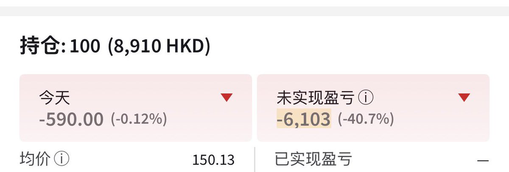

番茄🍅
@bcfqdtfqz
@0xAstra 那你要看阿里跟哪个比，阿里的模型他好像连国内的几个同行都追不上，本业淘宝的话之前也被外卖大战打的不成样子，spacex绑着个星链grok不行也是扎地
外加中概buff

Astra
@0xAstra
股票这种东西真的想不懂
论模型能力，业务，现金流，阿里比智谱也没差什么啊，相反好很多吧，稳定庞大的现金流业务，为什么只有下跌，到底是什么原因啊
$BABA https://t.co/nXoLglX5G7